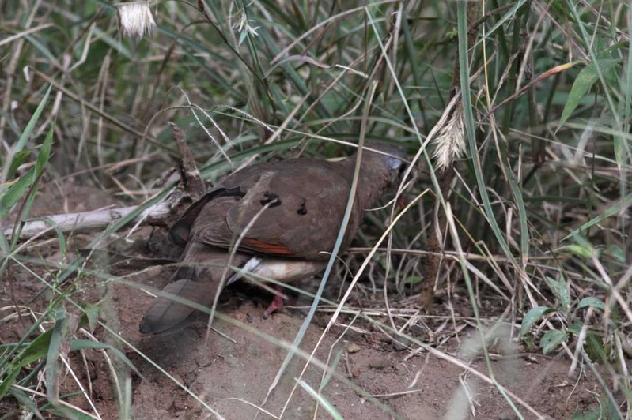
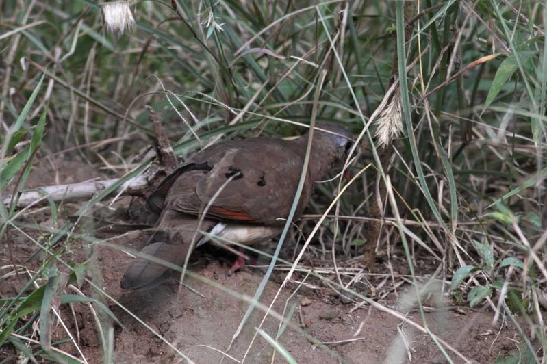

Greetings to all.
A week ago while on a non-birding tour I could not stop enjoying
close up looks of very tame Shallow’s Wheatears at the new Lake Nakuru Sopa
Lodge while a near tree (50m away) had one single Hemprich’s Hornbill calling
and who stayed around for all the lunch hour while there. I have seen them a couple
of times in the park before and frequented them Menengai Crater whenever i went
birding there and as well as Railway Station in Nakuru once. Also very close was
a “Blue-spotted Wood-Dove” as to how i ID’ed it feeding together with an
Emerald Spotted Wood Dove. Never seen them before in Lake Nakuru NP..... I did
not want to follow the bird for a better photo as it wasn’t on visitors
interest but I managed one attached. However, same day I found 1 more Blue
Spotted WDs and I was worried that may be I have been overlooking at them
before and just calling them ESWD since that’s what i expected. However, later
but same day i thought if i remember BSWD have yellowgreen bill tip but this
two individual had red-tipped bills. I therefore hoped to find another individual
but never came across. Now I’m totally confused if this is BSWD or ESWD and if a
south-of-equator Emerald SWD with red bill would look like and I cannot find
any photo of ESWD with red bill that I ever took. The bill tip of this is red
to about half the bill length would appreciate a help on this or what the story
is
In June while with Tris Allinson from Birdlife International we
had a single male African Crake in Nairobi N Park. Some roads were dry but
there still quite lots of slow running water through the grassland where the
bird disappeared too. We never got a photo unfortunately. Same June, Ethiopian
Swallows were feeding two youngones along the Solio fences along the 32km rd
north of Solio. While the first bridge had 2 nests of Angolan Swallows and were
feeding babies. Before this sighting, the eastern most range for the birds i knew
only ones nesting at Keekorok bridge in Masai Mara. And i have read of the ones
nesting in school at OlBorosat.
Then about two weeks ago still in Lake Nakuru National Park and
still on a non-birding trip I came across these weaver that looked “icecream”
yellow (attached). Looks like leucism but does it come this yellow.
Same Nakuru had this female Cliffchat (attached) whose mantle
feathers were fluffed over the wing as i’d thought. But she flew out and back
the feather seemed unchanged
Best Regards
chege
 
